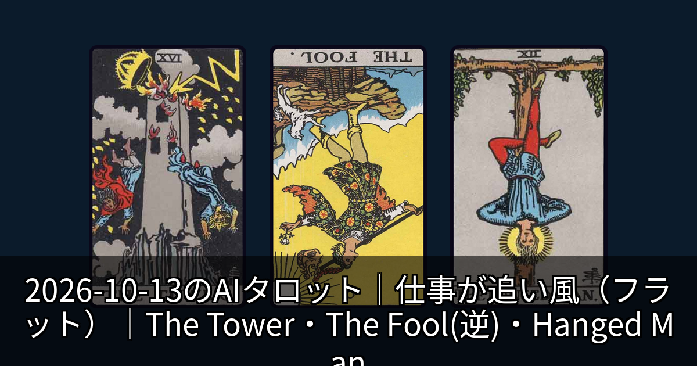

本文
# 2026-10-25のAIタロット｜仕事が追い風（上向き）｜Judgement(逆)・The Emperor・The Moon(逆) 対象: **全体運**（日付: 2026-10-25） ## 今日のスコア（1〜5） - 恋愛運: **4** ★★★★☆ - 仕事運: **5** ★★★★★ - 金運: **2** ★★☆☆☆ - 健康運: **3** ★★★☆☆ ## 今日のタロット（3枚） - **Judgement**（逆位置） - **The Emperor**（正位置） - **The Moon**（逆位置） ## ラッキー - 色: **ネイビー** - アイテム: **ノート** ## まとめ 平均3.5（上向き）。特に『work』が追い風。カード：Judgement（逆）, The Emperor, The Moon（逆）。 ## 一言アドバイス - **恋愛**: 【love】攻めの一手×不安と魅了（課題／逆位置）が追い風。連絡を取るすると良縁が集まります。周囲との調整を心がけて。 - **仕事**: 【work】主役運×評価・再起（課題／逆位置）の流れ。5分だけ前倒しすると、浮かれすぎ注意を意識すると運気が伸びます。 - **金運**: 【money】慎重さ×守りの強さの流れ。固定費を見直すと、焦らず足元固めを意識すると運気が伸びます。 - **健康**: 【health】整える×睡眠ケア（課題／逆位置）が追い風。水分補給を意識するすると良縁が集まります。やり過ぎ注意を心がけて。 --- ※ 本記事はAI生成のエンタメ占いです。参考程度にお楽しみください。 （タグ）占い / タロット / AI占い / 今日の運勢 / Judgement / The Emperor / The Moon / 仕事運